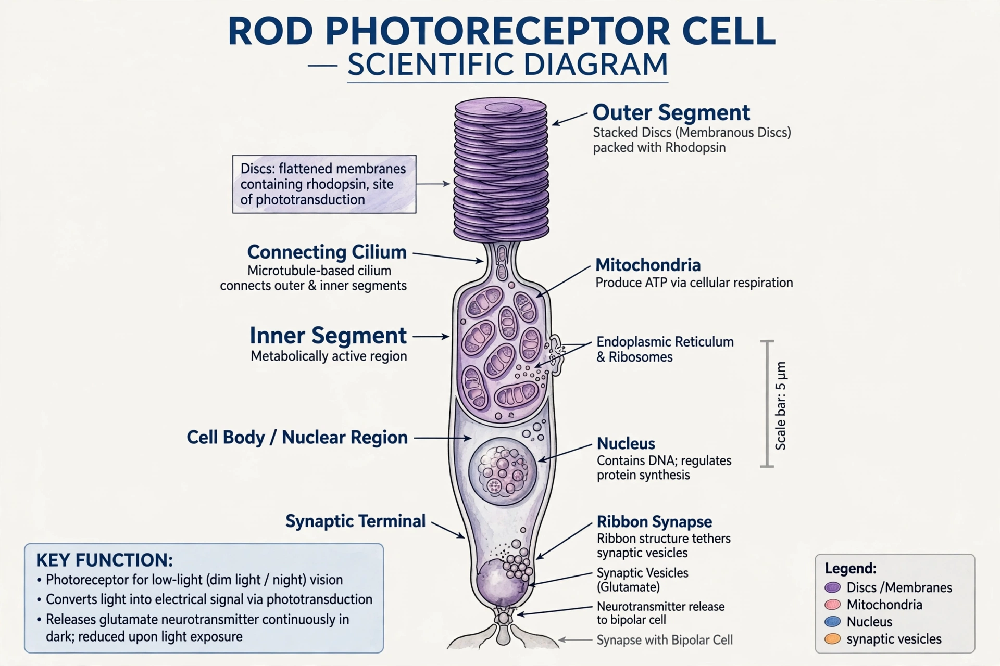

| Rod cell | |
|---|---|
| Location | Retina of the eye |
| Function | Low-light (scotopic) vision |
| Photopigment | Rhodopsin |
| Number (human) | ~120 million per eye |
| Peak sensitivity | ~498 nm (blue-green) |

Rod cells are photoreceptor cells in the retina of the eye that function in dim light and provide black-and-white vision. Named for their cylindrical, rod-like shape, they are absent from the central fovea and concentrated in the retinal periphery. A human retina contains roughly 120 million rods, compared with about 6–7 million cone cells.
A rod consists of an outer segment packed with stacks of membranous discs containing the photopigment rhodopsin, an inner segment rich in mitochondria, a cell body and a synaptic terminal. Unlike cones, whose outer segments are continuous with the cell membrane, rod discs are pinched off as separate structures and are continually shed and renewed by the retinal pigment epithelium.
Rods are extraordinarily sensitive: a single rod can respond to a single photon of light. Their photopigment rhodopsin absorbs maximally near 498 nm, which is why dim objects appear shifted toward blue-green (the Purkinje effect). Because many rods converge onto a single bipolar cell, rods sacrifice spatial acuity and colour discrimination for sensitivity — they yield no colour information and produce the low-resolution, monochromatic vision used at night (scotopic vision). Rods also respond sluggishly and saturate in bright daylight, where cones take over.
Loss of rod function causes night blindness (nyctalopia), seen in vitamin A deficiency since rhodopsin is built from a vitamin A derivative (retinal). In retinitis pigmentosa, rods degenerate first, producing tunnel vision before cones are affected.
This article was recreated from memory as part of a web-reconstruction exercise.